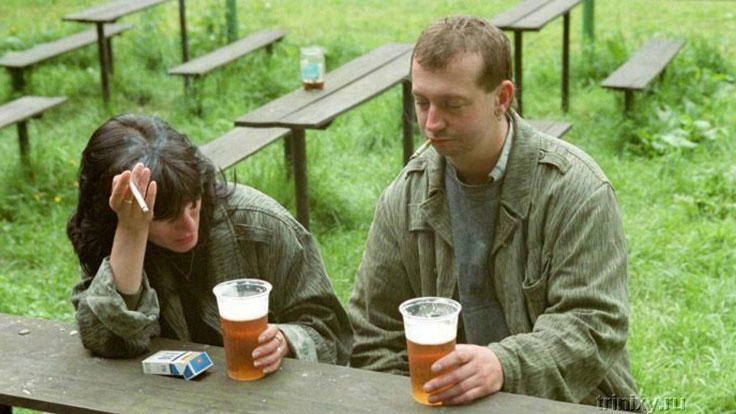

Ο ξαφνικός κεραυνοβόλος έρωτας μετατράπηκε σε εξίσου ξαφνική καταστροφή Ο λόγος για αυτό ήταν το αλκοόλ. In vino veritas, έλεγαν οι Ρωμαίοι. Που σημαίνει: η αλήθεια βρίσκεται στο κρασί. Εγώ στο κρασί βρήκα το πρόβλημα μου. Τώρα το μόνο που μου μένει να κάνω είναι να θυμηθώ αυτήν την ιστορία, να την ξαναπώ και να βγάλω τα συμπεράσματα μου. Και ευχαριστώ τον Κύριο που κατάφερα να βρω μια θεραπεία και να ξεφύγω από την αγκαλιά του πράσινου φιδιού.
Θυμάμαι το προτελευταίο μας βράδυ. Η αγαπημένη μου ήταν ξαπλωμένη δίπλα μου, με έσφιξε στην αγκαλιά της και εγώ ήθελα να φύγω μακριά. Τότε αποφάσισα ότι όλα τελείωσαν μεταξύ μας. Ήταν ένα άλλο μεθυσμένο βράδυ. Όπως πάντα, και τι δεν αναμίξαμε: ακριβό κονιάκ, και κόκκινο άγνωστης προέλευσης, και φθηνό βερμούτ. Όλα αυτά αναμείχθηκαν και σχημάτισαν μια αηδιαστική μυρωδιά αναθυμιάσεων, δηλητηριάζοντας τον αέρα στο δωμάτιο και τη σχέση μας..

Συναντηθήκαμε τυχαία - την παραμονή της Πρωτοχρονιάς. Πάντα πίστευα στα θαύματα της Πρωτοχρονιάς και το θεώρησα καλό σημάδι αυτό. Το γεγονός ότι η μοίρα θα έβαζε ένα γουρούνι κάτω από το χριστουγεννιάτικο δέντρο με τη μορφή του επικείμενου αλκοολισμού, δεν μπορούσα να το φανταστώ.
Η μοναξιά είχε ήδη γίνει χρόνια τότε. Με ρούφηξε ολοκληρωτικά η δουλειά, και η ζωή μου μετατράπηκε σε μέρα - σπίτι-γραφείο-σπίτι, που διακοπτόταν από μηνιαία επαγγελματικά ταξίδια σε άλλες πόλεις. Όλα αυτά ήταν σαν έναν ατελείωτο κύκλο δοκιμών αντοχής, στον οποίο εγώ, ως άντρας, και απλά, ως άνθρωπος, ήθελα λίγη φροντίδα..
Η προηγούμενη σχέση κράτησε αρκετά χρόνια, αλλά κατέληξε σε χωρισμό. Την αγάπη μου τότε την, δεν την αναπολούσα πλέον και δεν θρηνούσα. Συνέχισα να ζω με τον συνηθισμένο ρυθμό του έως ότου συνάντησα μια μελαχρινή χαμογελαστή κοπέλα σε ένα πάρτι. Το όνομά της ήταν Άννα, και ήταν τρία χρόνια μεγαλύτερη από μένα, κάτι που κέντρισε ακόμα περισσότερο το ενδιαφέρον μου. Πιάσαμε αμέσως την κουβέντα και αναπτύξαμε αμοιβαία συμπάθεια. Μετά από μερικούς μήνες αρχίσαμε να συζούμε.
Στην αρχή δεν έδωσα σημασία στην αδυναμία που είχε στο ποτό. Κάθε βόλτα που κάναμε συνοδευόταν από κρασάκι σε κάποιο παγκάκι πάρκου. Μπορούσε να πιεί ολόκληρο μπουκάλι. Έπινα και εγώ μαζί της. Και το θεωρούσα απολύτως φυσικό. Κάπως έτσι ξεκίνησε η σχέση μας.

όταν αρχίσαμε να συζούμε, το αλκοόλ όπως ήταν φυσικό δεν έφυγε από τη ζωή μας. Η μέρα της μαρμότας συνεχιζόταν, αλλά διαφορετικά πια: κάθε βράδυ άκουγα τις εξής κουβέντες: «Μωρό μου, πάρε, σε παρακαλώ, κρασί. Κόκκινο»; «Αγάπη μου μήπως να πιούμε καμιά μπυρίτσα»; «Μωρό, πάρε κάτι δυνατό για το βράδυ».
Τα βράδια τα περνάγαμε πάντα με κάποιο ποτηράκι, και το πρωί ήταν πάντα άσχημο: πονοκέφαλος, ναυτία, απώλεια μνήμης έγιναν σύντροφοι της ζωής μου Μια χούφτα χάπια για τον πονοκέφαλο, ναυτία και ζαλάδες δεν έσωζαν από τα ενοχλητικά συναισθήματα ντροπής και ενοχής. Τα συναισθήματα αυτά τα έσβηνα με άλλη μια μερίδα αλκοόλ. Και η σύντροφός μου έπινε για να ξανακάνει κεφάλι.
όλη αυτή η κατάσταση άρχισε να με ενοχλεί πολύ. Στο μυαλό μου στριφογύριζαν δυο αντίθετες απόψεις – «πρέπει να μιλήσουμε» και «έλα μωρέ θα περάσει, παρωδικό είναι». Διάλεξα την πρώτη. Δεν θυμάμαι ακριβώς πως ξεκίνησα αλλά τα λόγια μου ήταν περίπου τα εξής:
– Μαρία, μήπως να το ελαττώναμε λιγάκι το ποτό; – της είπα.
Ακολούθησε ένας φριχτός καυγάς. «Ποτέ στη ζωή μου κανείς δεν με έχει αποκαλέσει αλκοολική!» ωρυόταν η Μαρία. Αν και εγώ δεν την αποκάλεσα με αυτή τη λέξη. Αρνήθηκε να συμβιβαστεί, υποστηρίζοντας ότι: «Είμαι ενήλικας και, όπως και κάθε ενήλικας, έχω τις δικές μου ανάγκες. Έχω το δικαίωμα να επιτρέψω στον εαυτό μου να χαλαρώσει όπως νομίζω εγώ ότι πρέπει. Ειλικρινά, έπρεπε να μαζέψω τα πράγματα μου και να τα πετάξω εκείνη τη στιγμή. Αλλά το να χωρίσεις είναι πάντα πιο δύσκολο από το να ξανασμίξεις με κάποιον. Προσπάθησα να κάνω παρόμοιες συζητήσεις αρκετές φορές, αλλά πάντα οδηγούσαν σε διαμάχες..
– Πως μπορεί κανείς να ζει μαζί σου χωρίς αλκοόλ; Τι να πει κανείς μαζί σου, για τι να μιλήσει;, – μου έλεγε κρατώντας στο χέρι ένα ποτήρι κρασί.

Ενώ αυτή είχε τι να πει. Και όλες οι ιστορίες της άρχιζαν πάνω-κάτω με τον ίδιο τρόπο: «Είχαμε πάει για μπύρα με την Άννα…»; «Καθόμαστε στο μπαρ που λες και πίνουμε…»; «ήρθαμε στην πλαζ, και μας βάλανε να πιούμ…».
Και εγώ πήγαινα με τα νερά της. Μπεκρούλιαζα, καταπίνοντας λίτρα αλκοόλ, βρίσκοντας επίσης μια διέξοδο σε αυτό στο τέλος μιας δύσκολης εργάσιμης μέρας. Μη δίνοντας σημασία, ότι δύσκολη την μέρα αυτή την έκανε το χανγκοβερ.
Σε αυτούς τους ρυθμούς πέρασε σχεδόν ένας χρόνος, που σημάδεψε τη μνήμη μου με τις χειρότερες αναμνήσεις. Όλα τα άλλα σβήστηκαν από το ποτό.
Η συνειδητοποίηση ήρθε ξαφνικά, όπως και αυτός ο γελοίος έρωτας. Και συνέβη ένα Σάββατο πρωί, περίπου στις πέντε, όταν ξύπνησα από ένα φοβερό πονοκέφαλο που με εμπόδισε να κοιμηθώ ξανά. Στη συνέχεια κοιμήθηκα για 3-4 ώρες, όχι περισσότερο. Ολόκληρο το σώμα πονούσε, ένιωθα ράκος, ο κόσμος φαινόταν αηδιαστικά εχθρικός, και ήμουν ένας ασήμαντος αηδιαστικός μπεκρής. Όλα γύρω μου ήταν βρώμικα, διάσπαρτα πράγματα παντού. Η έντονη μυρωδιά των καπνών κρεμόταν στον αέρα σαν ένα πυκνό σύννεφο. Και δίπλα του ήταν μια τσαλακωμένη γυναίκα με το χθεσινό μακιγιάζ που είχε λερώσει το πρησμένο πρόσωπό της και έβγαζε δυσάρεστης μυρωδιάς ατμούς..
Και εκείνη τη στιγμή, ήρθε μια σαφής συνειδητοποίηση ότι έπρεπε απαραίτητα να το κόψω. Αλλά το χέρι πήγαινε μόνο του στο κουτάκι της μπύρας, γιατί το ζητούσε ο οργανισμός πια. Η Μαρία ξύπνησε και ακολούθησε το παράδειγμά μου.
Είχαμε κανονίσει μια συνάντηση με φίλους για το βράδυ. Και εννοείται πως έπρεπε να υπάρχουν ποτά. Η αλήθεια είναι σε εκείνο το σημείο πια πίναμε από το πρωί ως το βράδυ. Το πρωί μπύρα, μετά ακόμα μια, και ούτω καθεξής μέχρι το βράδυ. Και το βράδυ έμπαινε στο παιχνίδι το βαρύ πυροβολικό.

Είπα στη Μαρία ότι ήθελα να προσπαθήσω να το κόψω. Μου είπε ότι μάλλον δεν πάω καλά, χρησιμοποιώντας τα συνήθη επιχειρήματα: Δεν έχεις ιδέα πως είναι οι αλκοολικοί. Πίνω με μέτρο. Είμαστε ενήλικες και αποφασίζουμε μόνοι μας πώς θα ζήσουμε.
– Εσύ είσαι αλκοολικός και εσύ πρέπει να πας για αποτοξίνωση. Εγώ δεν το έχω ανάγκη, – ολοκλήρωσε.
Δεν είχε μείνει ίχνος από τον έρωτα. Τα πάντα μέσα καταστράφηκαν: και η επιθυμία για αγάπη και οι ελπίδες για το μέλλον και η πίστη σε ένα θαύμα. Η Μαρία με ενοχλούσε και της ζήτησα να φύγει από το διαμέρισμα και να εξαφανιστεί από τη ζωή μου.
Δάκρυα, υστερικές φωνές και παρακάλια στα πόδια, όμως όλα αυτά με άφηναν παγερά αδιάφορο πια. Οι κραυγές μιας μεθυσμένης γυναίκας φαίνονταν αηδιαστικές και το μόνο πράγμα που ήθελα ήταν να είμαι μόνος και το συντομότερο δυνατό. Όχι χωρίς δυσκολία, αλλά τελικά έπεισα τη Μαρία να πάει στη μητέρα της. Για πάντα.
Συνέχιζα να μπεκρουλιάζω μόνος μου. Μπεκρούλιαζα σε καθημερινή βάση για 4 μήνες, την ώρα πάντα υποσχόμουν στον εαυτό μου: «σήμερα θα είναι η τελευταία φορά». Συνειδητοποίησα όμως ότι μόνος μου δεν θα τα βγάλω πέρα .
Και τότε μια Κυριακή ξύπνησα από ένα πονοκέφαλο στις τέσσερις περίπου το πρωί. Η διάθεση μου ήταν τόσο άσχημη που η διάρροια και ο έμετος έμοιαζαν με ένα τίποτα μπροστά της. Κατά κάποιο τρόπο, έχοντας επανακτήσει τις αισθήσεις μου, πήρα το τηλέφωνο στα τρεμάμενα χέρια μου και μπήκα στο Google: πώς να κόψει κάποιος το ποτό. Μετά από ένα σύντομο σερφάρισμα σε μερικούς συνδέσμους, συνάντησα το . Εκεί έλεγε ότι αυτή η θεραπεία θα σας βοηθήσει να σταματήσετε να πίνετε το συντομότερο δυνατό. Και το πλεονέκτημά του είναι ότι αποτελείται αποκλειστικά από φυσικά συστατικά, έχει θετική επίδραση σε ολόκληρο το σώμα και αποκαθιστά τα όργανα που έχουν υποστεί βλάβη από το αλκοόλ..
«Μωρε λες είπα μέσα μου», – και παράγγειλα μερικές συσκευασίες του. Ένας σύμβουλος πωλήσεων με πήρε και επιβεβαιώσαμε μαζί την παραγγελία μου.
Ώσπου να έρθει το δέμα με το , συνέχιζα να μπεκρουλιάζω. Μόλις πήρα στα χέρια μου το σκεύασμα, άρχισα να το χρησιμοποιώ. Οι πρώτες μερικές μέρες ήταν δύσκολες… ένιωθα την ανάγκη να πιώ, αλλά προσπαθούσα να κρατηθώ. Όμως μερικές φορές, το παραδέχομαι, κατρακυλούσα.
Και μετά από μια εβδομάδα όλα ήταν σαν να είχα απελευθερωθεί. Η ψυχολογική εξάρτηση από το ποτό είχε φύγει. Δεν ήμουν πλέον σκλάβος του μπουκαλιού, τα βράδια δεν συνδέονταν πλέον με το αλκοόλ και τα πρωινά δεν συσχετίζονταν πλέον με πονοκέγαλο και ναυτία. Ωστόσο, όπως αναφέρθηκε στις οδηγίες για το , αυτό είναι μόνο το πρώτο στάδιο της θεραπείας. Σε καμία περίπτωση δεν πρέπει να σταματήσω να παίρνω το φάρμακο, γι 'αυτό συνέχισα να το παίρνω σύμφωνα με τις οδηγίες..
Σταδιακά, οι φίλοι μου - οι μεθύστακες εξαφανίστηκαν από τη ζωή μου. Απλώς δεν είχαμε τίποτα κοινό πια. Έστρεψα την προσοχή μου σε φίλους με άλλα ενδιαφέροντα.
Έκτοτε, έχουν περάσει 1,5 χρόνια και η ζωή μου έχει αλλάξει δραματικά. Βρήκα ένα νέο, αξιοπρεπές κορίτσι με το οποίο παρακολουθούμε ταινίες τα βράδια, μαγειρεύουμε φαγητό μαζί, περπατώ, πηγαίνω στον κινηματογράφο - γενικά, περνάμε υπέροχα το χρόνο μας. Και αυτός ο εφιάλτης έχει μείνει πίσω ... σαν ένα κακό όνειρο.
Αποφάσισα να μοιραστώ αυτήν την ιστορία γιατί πιστεύω ότι η εμπειρία μου μπορεί να είναι χρήσιμη σε άλλους ανθρώπους που έχουν την τάση να κάνουν κατάχρηση κατανάλωσης αλκοόλ. Το είναι αυτό που με τράβηξε από το πάτο της ζωής μου και δεν μου επέτρεψε να πεθάνω. Άνθρωποι, σταματήστε! Μην σκοτώνετε τον εαυτό σας. Η ζωή είναι όμορφη και για να δείτε την ομορφιά της, πρέπει να εγκαταλείψετε τις καταστροφικές σας συνήθειες. Και μερικές φορές να απαλλαγείτε από ανθρώπους καταστροφικούς για εσάς.
Σας αφήνω εδώ το λινκ για το . Παρεμπιπτόντως, τρέχει μια προσφορά εκεί τώρα. Βιαστείτε.